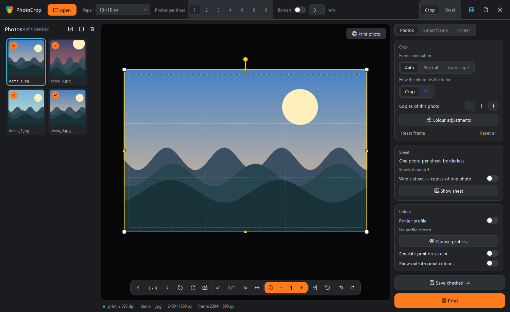
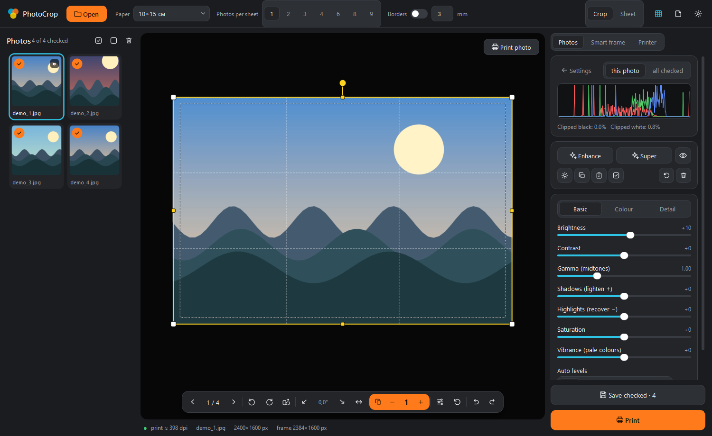
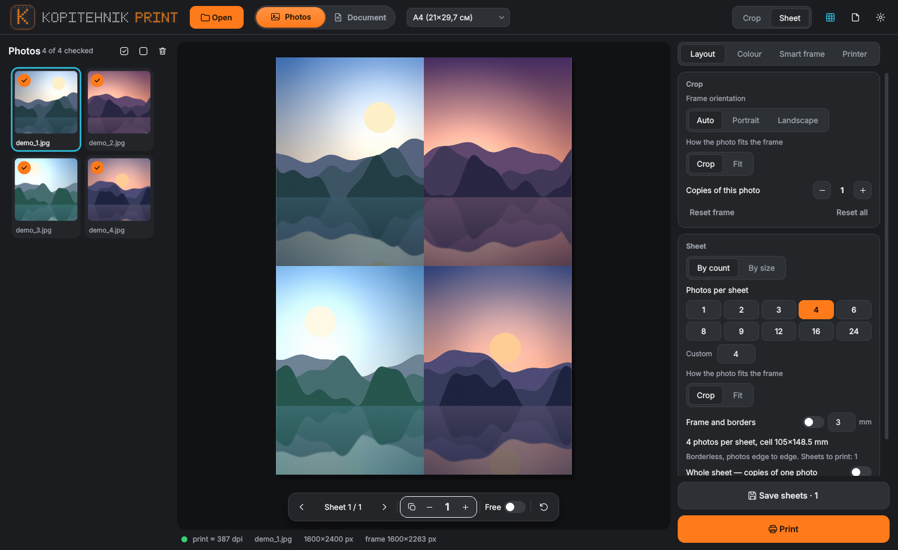
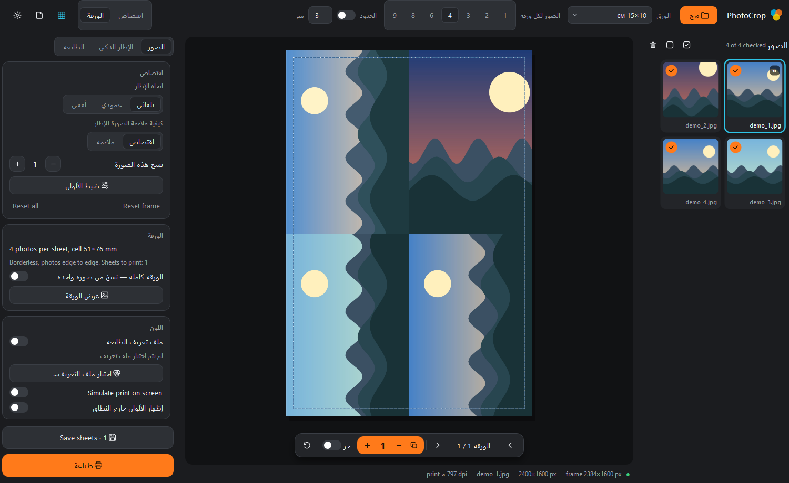

Step 1Frame
Crop to the print size
Pick the format, then drag the frame or let the smart frame place it around the subject.
Photo cropping and printing for Windows
Frame every photo to the exact print size, tune the colour, and lay the sheet out in one window. Let the smart frame find the subject, or hand the whole job to an AI agent.
Free download from GitHub Releases. The exe is not code-signed, so Windows SmartScreen may ask you to confirm.
The workflow
Pick the format, then drag the frame or let the smart frame place it around the subject.
Brightness, contrast, vibrance and the rest of the sliders, with colour profiles for a consistent result.
Pick the printer and paper, plan the sheet, run the preflight check and send it to the queue.
Agent mode
The agent speaks JSON commands through a command line, and an MCP server lets Claude Desktop drive the whole program. Add it to your Claude Desktop config and ask for the prints in plain words.
// claude_desktop_config.json { "mcpServers": { "photocrop": { "command": "C:\\path\\to\\PhotoCropAgent.exe", "args": ["mcp"] } } }
Languages
The interface is machine translated and still partly in English or Russian in long messages. Native-speaker corrections are welcome as GitHub issues.
Screenshots




Download PhotoCropQt.exe for the full window, or PhotoCropAgent.exe for agent mode. No Python needed. Source and build workflow are on GitHub. License: not selected yet.